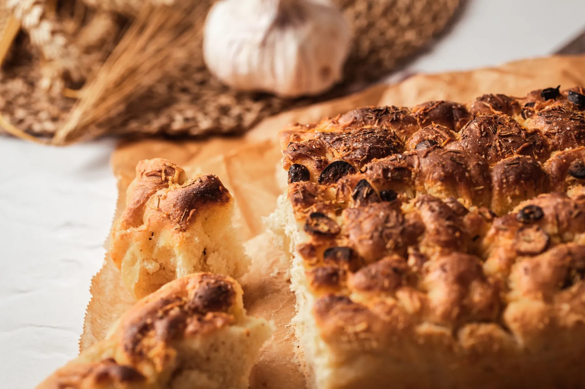
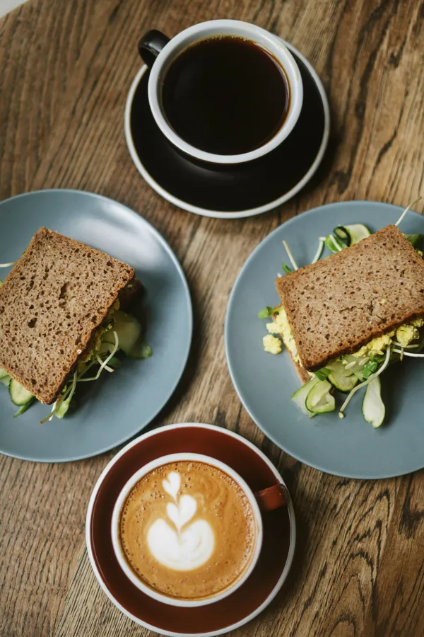

Focaccia, sandviç ve bir fincan kahve.
Kendi sayfanızda, kendi adınızla. Sorular ve siparişler doğrudan WhatsApp'a gelsin.
Bir dilim focaccia, içine dolan bir sandviç, yanında sıcak bir fincan. Çamlık'ta bir kapı; ekranda da kendi sayfası. Sorularınız ve siparişiniz doğrudan WhatsApp'a gelsin.
Yemeksepeti gibi aracı platformlar yerinde kalır; bu sayfa onların yanına, müşterinin sizinle doğrudan konuştuğu bir kapı ekler.
Bir sandviç böyle kurulur.
- 1TabanHer şey bir dilim focaccia ile başlar: yağlı, yumuşak, hafif tuzlu bir ekmek.
- 2Sulu katmanDomates dilimleri ilk renk olarak girer.
- 3PeynirDomatesin üstüne yayılan, kenarlardan sarkan bir katman.
- 4YeşillikÇıtır bir kıvrım; her lokmaya ferahlık.
- 5KapakÜstte ikinci dilim focaccia; zeytin ve biberiyeyle kapanır.
Bu, sandviçin nasıl katmanlandığını anlatan genel bir çizimdir; u'two'nun menüsü ya da tarifi değildir. Gerçek içerikler işletmeyle birlikte yazılır.
Beş başlık, tek sayfa.
Başlıklar Instagram profilinizin öne çıkanlarından alındı. Ürün adları ve fiyatlar sizinle birlikte eklenir.




 temsilî fotoğraf
temsilî fotoğraf
Sofradan kareler.
Fotoğraflar temsilîdir; yayında kendi çekimleriniz yer alır.


Fişi siz doldurun, WhatsApp'a gitsin.
Kalemleri, alış zamanını ve notunuzu seçin; sağdaki fiş kendiliğinden yazılır. WhatsApp'ta açılır, siz gönderirsiniz. Uygunluğu ve tutarı işletme teyit eder; bu sayfada fiyat yoktur.
Sadece bir şey mi soracaksınız?
Çalışma saatleri hesaplanıyor.
- ADRES
- Çamlık, Kınıklı Mah. 6024 Sk. No:4/A
Denizli - SAATLER
- Salı – Pazar 09.00 – 18.00
Pazartesi kapalı - TELEFON / WHATSAPP
- 0537 462 23 65
- @utwocoffee
Gösterge listelenen saatlere göre hesaplanır; resmî tatil ve özel günler dahil değildir. Bizi beğendiyseniz Google Haritalar'da deneyiminizi paylaşın.